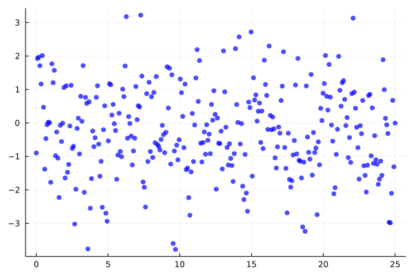
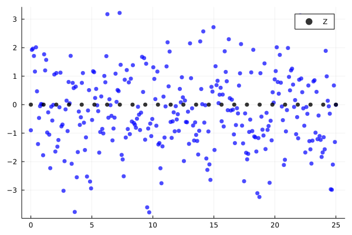
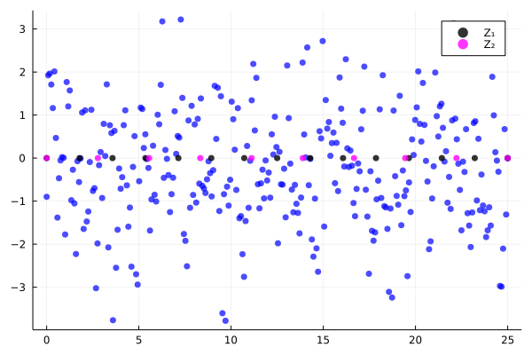
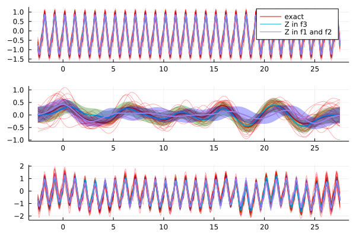

Pseudo-Points in Additive Regression

You are seeing the HTML output generated by Documenter.jl and Literate.jl from the Julia source file. The corresponding notebook can be viewed in nbviewer.
using AbstractGPs, Plots, Random, Stheno
gr();Define model.
σ², ω, T = 1e0, 1.0, 25.0;
f = @gppp let
f1 = periodic(GP(SEKernel()), ω)
f2 = GP(0.1 * SEKernel())
f3 = f1 + f2
end;Sample from marginal process to generate toy data.
rng = MersenneTwister(123456);
S = 25;
x = GPPPInput(:f3, range(0.0, T; length=300));
fx = f(x, σ²);
y = rand(rng, fx);
xp_ = range(-2.5, T + 2.5; length=500);Plots for stuff.
f₁′_plot, f₂′_plot, f₃′_plot = plot(), plot(), plot();
posterior_plot = plot();
approx_in_marginal_posterior_plot = plot();
approx_in_latents_posterior_plot = plot();Exact Inference
Compute the posterior processes, sample from them, and compute marginals.
@show logpdf(fx, y)
f′ = posterior(fx, y);
xp_f1 = GPPPInput(:f1, xp_);
xp_f2 = GPPPInput(:f2, xp_);
xp_f3 = GPPPInput(:f3, xp_);
xp = BlockData(xp_f1, xp_f2, xp_f3);
f′xp = rand(f′(xp, 1e-9), S);
f₁′xp, f₂′xp, f₃′xp = split(xp, f′xp);
items = [
(xp_f1, f₁′xp, :red, "exact", f₁′_plot),
(xp_f2, f₂′xp, :red, "", f₂′_plot),
(xp_f3, f₃′xp, :red, "", f₃′_plot),
];logpdf(fx, y) = -465.9934901401266
Plot posterior marginals and samples.
for (x, samples, colour, name, plt) in items
plot!(plt, xp_, f′(x); fillalpha=0.2, color=colour, label=name);
plot!(plt, xp_, samples; alpha=0.3, color=colour, label="", linewidth=1);
endPlot observations.
scatter!(posterior_plot, x.x, y;
markercolor=:blue,
markershape=:circle,
markerstrokewidth=0.0,
markersize=4,
markeralpha=0.7,
label="",
)
Approximate inference with pseudo-data in f3
Compute approximate posterior process.
M3 = 25;
z = GPPPInput(:f3, collect(range(0, T; length=M3)));
u = f(z, 1e-9);
f′_approx = posterior(VFE(u), fx, y);
@show elbo(VFE(u), fx, y);
items = [
(xp_f1, :green, "Z in f3", f₁′_plot),
(xp_f2, :green, "", f₂′_plot),
(xp_f3, :green, "", f₃′_plot),
];elbo(VFE(u), fx, y) = -478.2661616016306
Posterior marginal variance.
for (x, colour, name, plt) in items
plot!(plt, xp_, f′_approx(x); fillalpha=0.3, fillcolor=colour, label=name);
endPlot observations and pseudo-input locations.
scatter!(approx_in_marginal_posterior_plot, x.x, y;
markercolor=:blue,
markershape=:circle,
markerstrokewidth=0.0,
markersize=4,
markeralpha=0.7,
label="",
);
scatter!(approx_in_marginal_posterior_plot, z.x, zeros(M3);
markercolor=:black,
markershape=:circle,
markerstrokewidth=0.0,
markersize=4,
markeralpha=0.8,
label="Z",
)
Perform approximate inference by placing pseudo-data in f1 and f2
Compute approximate posterior process.
M1, M2 = 15, 10;
z1 = GPPPInput(:f1, collect(range(0.0, T; length=M1)));
z2 = GPPPInput(:f2, collect(range(0.0, T; length=M2)));
z12 = BlockData(z1, z2);
u12 = f(z12, 1e-9);
f′_approx_12 = posterior(VFE(u12), fx, y);
@show elbo(VFE(u12), fx, y);
items = [
(xp_f1, :blue, "Z in f1 and f2", f₁′_plot),
(xp_f2, :blue, "", f₂′_plot),
(xp_f3, :blue, "", f₃′_plot),
];elbo(VFE(u12), fx, y) = -477.4916323879491
Plot posterior marginals.
for (x, colour, name, plt) in items
plot!(plt, xp_, f′_approx_12(x); fillalpha=0.3, fillcolor=colour, label=name)
endPlot observations and pseudo-input locations.
scatter!(approx_in_latents_posterior_plot, x.x, y;
markercolor=:blue,
markershape=:circle,
markerstrokewidth=0.0,
markersize=4,
markeralpha=0.7,
label="",
);
scatter!(approx_in_latents_posterior_plot, z1.x, zeros(M1);
markercolor=:black,
markershape=:circle,
markerstrokewidth=0.0,
markersize=4,
markeralpha=0.8,
label="Z₁",
);
scatter!(approx_in_latents_posterior_plot, z2.x, zeros(M2);
markercolor=:magenta,
markershape=:circle,
markerstrokewidth=0.0,
markersize=4,
markeralpha=0.8,
label="Z₂",
)
The end result
plot(f₁′_plot, f₂′_plot, f₃′_plot; layout=(3, 1))
This page was generated using Literate.jl.